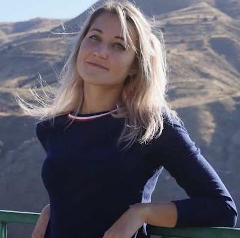

Iryna Lisovodska

Education
-
2012-2017: Odesa National Economic University, Bachelor's degree in
Finance and credit
-
2017-2019: Odesa National Economic University, Master's degree in Finance,
banking and insurance
Work experience
-
2022(Apr)-2022(Nov): Barista at coffee-point in ASML Plaza building. Making coffee,
drinks; operating with professional coffee-machine, counter-desk
-
2017-2022(March): Running of own coffee&bakery cafe,family business. Financial
policy and control, supply chain, finding new ways of development
and improving, HR policy, staff training, inventory control
-
2014 - 2017: Fitness instructor (coach), group of children 4-10y.o.